阅读词表
| 词条 | 拼音 | 类型 | 说明 |
|---|---|---|---|
| 纣王 | zhòu wáng | person | 商朝末代王帝辛。 |
| 卜辞 | bǔ cí | text | 甲骨上记录占卜的文字。 |
| 铭文 | míng wén | text | 铸刻在青铜器等器物上的文字。 |
| 人方伯 | rén fāng bó | person | 卜辞中夷方首领称号。 |
| 淮河 | huái hé | place | 中国东部重要河流。 |
| 甲骨卜辞 | jiǎ gǔ bǔ cí | text | 刻写在甲骨上的占卜记录。 |
| 夷方 | yí fāng | concept | 商末东南方族群或方国。 |
| 甗女 | yǎn nǚ | person | 刘家庄北墓葬中被殉的女性，因头骨置于铜甗中而得名。 |
| 梅伯 | méi bó | person | 传说中被纣王杀害者，文中与夷方伯联系。 |
| 作册般 | zuò cè bān | person | 晚商作册官名。 |
| 夙 | sù | rare_word | 本章族名用字；夙兴夜寐的“夙”。 |
| 艅 | yú | rare_word | 本章“小臣艅犀尊”人名用字。 |
| 人牲 | rén shēng | concept | 被杀用于祭祀的人。 |
| 帝辛 | dì xīn | person | 商纣王的王名。 |
| 攸国 | yōu guó | place | 淮河附近商代侯国。 |
| 甾 | zāi | rare_word | 本章甲骨释文“多侯甾伐人方伯”中的用字。 |
| 敄 | wù | rare_word | 本章夷人首领“无敄”名中的用字。 |
| 犀尊 | xī zūn | bronze_item | 犀牛形青铜尊。 |
| 攸侯 | yōu hóu | person | 攸国君长。 |
| 箕子 | jī zǐ | person | 商末贵族，后世文献中重要人物。 |
| 肜 | róng | rare_word | 商代祭名，正祭次日再次举行的祭祀。 |
| 青铜卣 | qīng tóng yǒu | bronze_item | 青铜盛酒器卣。 |
| 甲骨拓片 | jiǎ gǔ tà piàn | artifact | 甲骨文字拓印图。 |
| 战俘 | zhàn fú | concept | 战争中捕获的人。 |
| 东南夷 | dōng nán yí | concept | 商朝东南方向诸夷族群。 |
| 龋 | qǔ | reading | 龋齿的“龋”。 |
| 《合集》 | hé jí | 项目词典 | 《甲骨文合集》的简称。 |
| 九世之乱 | jiǔ shì zhī luàn | 项目词典 | 《史记》所记商代中期王室长期内乱。 |
| 刘家庄北 | liú jiā zhuāng běi | 项目词典 | 殷墟南部商人聚落和制陶区。 |
| 夯土地基 | hāng tǔ dì jī | 项目词典 | 夯土筑成的建筑基础。 |
| 泾渭分明 | jīng wèi fēn míng | 项目词典 | 界限清楚，差别明显。 |
| 郑州商城 | zhèng zhōu shāng chéng | 项目词典 | 商代早期大型城址。 |
| 青铜礼器 | qīng tóng lǐ qì | 项目词典 | 用于礼仪或祭祀的青铜器。 |
| 伯邑考 | bó yì kǎo | 项目词典 | 文王长子。 |
| 卦爻辞 | guà yáo cí | 项目词典 | 《易经》中卦辞和爻辞的合称。 | 《易经》中解释卦、爻的辞句。 |
| 周文王 | zhōu wén wáng | 项目词典 | 周族领袖姬昌。 |
| 王陵区 | wáng líng qū | 项目词典 | 王室墓葬集中的区域。 | 王室墓葬和祭祀坑集中的区域。 |
| 老牛坡 | lǎo niú pō | 项目词典 | 西安附近商代遗址，文中涉及商人据点和人祭。 | 陕西西安商代遗址。 |
| 车马坑 | chē mǎ kēng | 项目词典 | 埋葬车马的陪葬坑。 |
| 铜礼器 | tóng lǐ qì | 项目词典 | 用于礼仪或祭祀的青铜器。 |
| 人殉 | rén xùn | 项目词典 | 以人为死者殉葬。 | 以人随葬或陪葬的行为，常见于古代贵族墓葬。 | 以人随葬或陪葬的行为。 | 随墓主而死或被杀陪葬。 |
| 人祭 | rén jì | 项目词典 | 杀人用于祭祀的宗教行为。 | 以人作为祭品的祭祀行为。 | 杀人用于祭祀。 |
| 俯身 | fǔ shēn | 项目词典 | 身体向前伏下。 |
| 先后 | xiān hòu | 项目词典 | 《盘庚》引文中指已故先王。 |
| 卦辞 | guà cí | 项目词典 | 解释一卦吉凶和意义的文字。 |
| 合祭 | hé jì | 项目词典 | 把多位祖先或神灵合在一起祭祀。 |
| 周昌 | zhōu chāng | 项目词典 | 周文王姬昌，书中常称周昌。 | 周文王姬昌。 | 周文王之名。 |
| 商族 | shāng zú | 项目词典 | 商王朝建立前后的族群共同体。 |
| 商王 | shāng wáng | 项目词典 | 商朝王。 |
| 土著 | tǔ zhù | 项目词典 | 本地原有居民或族群。 |
| 地层 | dì céng | 项目词典 | 遗址中不同时期堆积形成的层次。 |
| 城邑 | chéng yì | 项目词典 | 古代有人群聚居、具有一定组织和防御功能的城镇聚落。 |
| 墓道 | mù dào | 项目词典 | 大墓中通往墓穴的斜坡或通道。 |
| 夯土 | hāng tǔ | 项目词典 | 把土层层夯实形成建筑基础或城墙的技术。 |
| 崇国 | chóng guó | 项目词典 | 商周之际西土方国。 |
| 左传 | zuǒ zhuàn | 项目词典 | 春秋史传文献。 |
| 征伐 | zhēng fá | 项目词典 | 出兵讨伐。 |
| 方伯 | fāng bó | 项目词典 | 商周时期受命统领一方的首领。 | 受命统领一方的首领。 |
| 族徽 | zú huī | 项目词典 | 族群标识，常见于商周青铜器铭文。 |
| 族邑 | zú yì | 项目词典 | 以部族为单位聚居形成的城邑或聚落。 | 商代宗族聚落。 |
| 明夷 | míng yí | 项目词典 | 《易经》卦名。 |
| 易经 | yì jīng | 项目词典 | 文王卦爻辞体系，书中用以讨论翦商谋略。 | 文王卦爻辞体系。 | 以六十四卦及卦爻辞为主体的古代经典。 |
| 柱洞 | zhù dòng | 项目词典 | 考古遗迹中柱子留下的洞穴痕迹。 |
| 棺椁 | guān guǒ | 项目词典 | 棺材及外棺。 |
| 楚国 | chǔ guó | 项目词典 | 春秋战国南方大国。 |
| 殉人 | xùn rén | 项目词典 | 陪葬或随葬的人。 |
| 殉葬 | xùn zàng | 项目词典 | 以人或物随葬。 |
| 殷商 | yīn shāng | 项目词典 | 商朝后期文化和政权。 | 商代后期以殷墟为中心的商王朝阶段。 |
| 殷墟 | yīn xū | 项目词典 | 晚商都邑遗址，甲骨卜辞的重要出土地。 | 商代晚期都城遗址。 |
| 殷都 | yīn dū | 项目词典 | 商朝后期都城区域，今安阳殷墟一带。 | 商朝后期都城区域。 | 晚商都城，通常指安阳殷墟。 |
| 水牛 | shuǐ niú | 项目词典 | 商人畜牧和祭祀中涉及的家畜。 |
| 爻辞 | yáo cí | 项目词典 | 解释每一爻吉凶和意义的文字。 |
| 献祭 | xiàn jì | 项目词典 | 把祭品奉献给神灵或祖先。 | 向神灵、祖先等奉献祭品。 |
| 玉戈 | yù gē | 项目词典 | 玉制戈，多为礼仪性器物。 |
| 疆域 | jiāng yù | 项目词典 | 国家或政权控制、影响的地域范围。 |
| 盘庚 | pán gēng | 项目词典 | 商王名，以迁都殷地著称。 |
| 祖乙 | zǔ yǐ | 项目词典 | 商王名，史书记载其迁都于邢。 |
| 羌人 | qiāng rén | 项目词典 | 西方族群，常见于商代卜辞。 |
| 西土 | xī tǔ | 项目词典 | 周族所在的西方地区。 |
| 豢养 | huàn yǎng | 项目词典 | 饲养；多指养动物。 | 饲养、供养。 |
| 迁徙 | qiān xǐ | 项目词典 | 群体从一地迁移到另一地。 |
| 遗存 | yí cún | 项目词典 | 古代活动留下的遗物、遗迹或现象。 |
| 都邑 | dū yì | 项目词典 | 作为政治中心的大型聚落或城市。 |
| 酋长 | qiú zhǎng | 项目词典 | 部落或地方共同体的首领。 |
| 铜戈 | tóng gē | 项目词典 | 青铜戈，古代横刃长柄兵器。 | 青铜戈，商周常见兵器。 |
| 铜斝 | tóng jiǎ | 项目词典 | 青铜斝，古代三足酒器。 |
| 铜爵 | tóng jué | 项目词典 | 青铜酒器爵。 | 青铜爵，古代酒器。 |
| 铜甗 | tóng yǎn | 项目词典 | 青铜甗，古代蒸食器。 |
| 铜矛 | tóng máo | 项目词典 | 青铜矛，刺击兵器。 |
| 铜觚 | tóng gū | 项目词典 | 青铜酒器觚。 | 青铜觚，古代饮酒器。 | 古代饮酒器；若正文作近形误字，需对照原书核实。 |
| 铜镞 | tóng zú | 项目词典 | 青铜箭头。 |
| 铜鼎 | tóng dǐng | 项目词典 | 青铜鼎，古代炊煮或礼仪重器。 | 青铜鼎，礼器或炊器。 |
| 鼎铭 | dǐng míng | 项目词典 | 铸刻在鼎上的铭文。 |
青铜器词表
| 器名 | 拼音 | 类型 | 说明 |
|---|---|---|---|
| 戈 | gē | bronze_item | 古代横刃长柄兵器。 |
| 甗 | yǎn | bronze_item | 古代蒸食器，上甑下鬲。 |
| 爵 | jué | bronze_item | 古代酒器，也引申为爵位。 |
| 觚 | gū | bronze_item | 古代饮酒器。 |
| 镞 | zú | bronze_item | 箭头。 |
| 卣 | yǒu | bronze_item | 古代盛酒器，常有盖和提梁。 |
| 钺 | yuè | bronze_item | 大型斧形兵器或礼器。 |
| 斝 | jiǎ | bronze_item | 古代青铜酒器，圆口三足。 |
| 彝 | yí | bronze_item | 古代盛酒器，也泛指宗庙祭器。 |
疑难古文字与 OCR 校读表
| 来源 | 当前文字 | 问题 | 处理 |
|---|---|---|---|
| 纣王南征夷方甲骨／铭文残文 | 《合集》38758：“人方伯……祖乙伐。”；乙巳卜，在口，［贞］王田口，亡灾。［获］见廿又口，来征人方。 | 原文含甲骨残缺、省略号和“口”形缺字占位，OCR 可能混淆“口”与缺字框。 | 保留残缺现状；若查到可靠释文，再统一替换缺字占位和标点。 |
章节导读札记
| 主题 | 札记 | 操作 |
|---|---|---|
| 暂无章节导读札记 | ||
用户札记
| 类型 | 页 | 内容 |
|---|---|---|
| 暂无用户札记 | ||
原书阅读器页 429原书物理 PDF 页 427印刷页 415
第二十二章纣王的东南战争
1999年，在殷都通往南方的大路边的刘家庄北聚落，发掘出一座贵族墓葬，编号为刘家庄北M1046。
墓主是一名商朝高级武官，统治着一个叫“夙”的部族，随葬有各种铜礼器33件，铜戈和铜矛50多件，此外，还有大量玉器和陶器。这座墓很幸运，从没有被盗掘过，所有物品和殉人都处在入葬时的位置。
〔按语：夙（sù；夙兴夜寐）〕
该墓使用了六人殉葬。棺木右侧的A是一名少女，头被砍下，人头位置放了一件青铜甗，里面盛着她的头颅。随葬的还有被切成大块的猪肉、牛肉和羊肉，以及一只煮在铜鼎里的鸡。[[fn:1]]
为何要把人头放在蒸锅里，难道是蒸熟的吗？通常，殷墟出土的其他人头大都是光润的棕黄色，头骨断茬呈锯齿状，但刘家庄北M1046铜甗里的这颗却颜色灰暗，断茬整齐，说明人头已经被蒸熟。
在这之前，考古队曾在王陵区M259贵族墓发现随葬铜甗中装着人头，但当时没有在意，认为它可能是偶然掉落进去的。而刘家庄北的M1046再次出现这种现象，说明殷都确实有蒸食人头的做法。
王陵区M259属于殷墟二期，刘家庄北M1046属于四期，看来这种食人方式一直存续到商朝的终结。[[fn:2]]
盛人头青铜甗（图）
经鉴定，刘家庄北M1046铜甗里的这颗人头是一位十四五岁的少女的，这里我们姑且叫她“甗女A”。而对甗女A牙齿的同位素鉴定发现，她生长的主要地区并不是安阳殷都，而是在更东南方，可能是淮河流域；她的牙齿也没有龋齿现象，说明在生前，食物主要是蛋白质而非淀粉，地位应该较高。[[fn:3]]
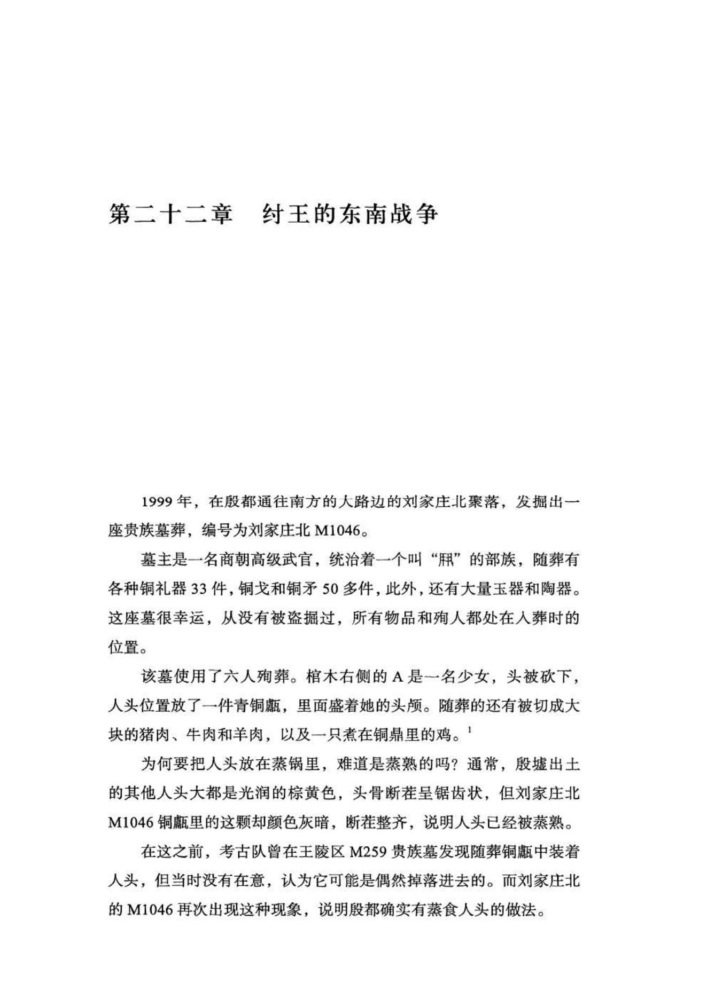
原书阅读器页 430原书物理 PDF 页 428印刷页 416
那么，淮河流域部落的上层女子，为何会成为殷都的殉葬人，而且是作为食物而被殉葬？原因可能在于商朝对东南地区的征伐。
周文王占算的南征
东方和南方的土著，商人称之为“夷”。《左传•昭公二十一年》载：“纣克东夷而陨其身这是商王朝终结之前的一场宏大的征服运动，留下众多甲骨卜辞和铜器铭文。《易经》中也多次提及周昌为纣王占算作战的吉凶，很可能他也参加了纣王时期某些征伐夷人的战争。
比如，离卦上九爻曰：“王用出征，有嘉折首，获匪其丑。无咎。”意为王得到这个占算结果就出征，有大喜庆之事，斩首很多敌人，还会有些意想不到的收获，没有灾祸。明夷卦九三日：“明夷于南狩，得其大首。不可疾贞。”卦名“明夷”比较难解释，但“南狩，得其大首”的意思较明显，是说王亲征南方，得到了重要人物的首级。商朝俘获夷方酋长后，一般会保存头骨，在上面刻字记功，“大首”可能指的就是这种酋长的头颅。
师卦比较特殊，它的卦爻辞都是关于出征作战的：
贞丈人，吉，无咎。
初六：师出以律，否臧，凶。
九二：在师中，吉，无咎。王三锡命。
六三：师或舆尸，凶。
六四；师左次，无咎。
六五：田有禽，利执言，无咎。长子帅师，弟子舆尸，贞凶。
上六：大君有命，开国承家，小人勿用。
如九二爻“在师中，吉，无咎。王三锡命”，意思是说，在军队中，吉利，没有灾祸，王还多次发布赏赐之命令。看来，周昌的占算曾多次得到纣王奖励。其他各爻，则都是占算作战结果的。如六三爻“师或舆尸”，是说军队可能要用车辆拉尸体，这是战败之兆；六四爻“师左次”，是说军队应当向左方运动；六五爻“长子帅师，弟子舆尸”，则可能是说长子指挥军队，弟子（侄子）用车拉尸体。这里的长子和弟子所指不详，有可能是周昌自己的子弟：长子有可能是指伯邑考，此时负责为纣王赶车，可能有机会指挥非商人的仆从部落武装参战；至于侄子，周昌有两个弟弟虢仲和虢叔，可能他们的儿子也有追随周昌到殷都的，并且参加了纣王的南征，但“贞凶”，可能是说战死了。这一卦的卦辞“贞丈人，吉，无咎”，大意是说，占算老年人（可能是周昌自己）的命运，结果吉利，没有灾祸。
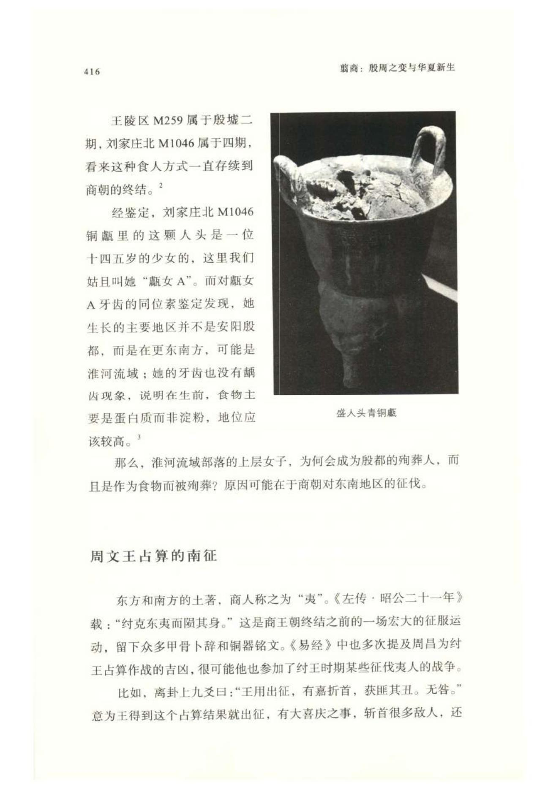
原书阅读器页 431原书物理 PDF 页 429印刷页 417
商族起源于东南方的夷人，甲骨文里，“夷”字写作“人”，这可能是商族还在夷人中混沌未分时的产物，但到他们建立王朝后，“夷”已经是一种很低下的族群称谓。
在发现的甲骨卜辞中，纣王曾不止一次南征夷人，信息比较多的一次发生在纣王在位第十年，按照帝乙改革过的“周祭”纪年方式，称为“帝辛十祀”。攸侯“喜”，一个淮河边的小侯国（名“攸”）的国君，向商王报告说，淮南“夷（人）方”的某个首领（人方伯）叫梅的部落，最近颇不恭顺，屡次侵犯攸国，于是，纣王在龟甲占卜后，策划了这次对夷方的远征。[[fn:4]]
1970年代，上海博物馆曾从民间征集了一批文物，其中有一块未经著录的殷商末期的牛胛骨残片，文物学家沈之瑜将其释读为：“……人方伯梅率……多侯甾伐人方伯……”[[fn:5]] 这块甲骨虽然上下都有缺文，但似乎亦可作为纣王伐梅的一个印证。
甲骨文中出现的地名，绝大多数难以确定具体在何地，但帝辛十祀的这次远征有点例外，地名中出现了“淮”字（《英藏》2563、《合集》36968），而它只能是代表淮河。有了这个基准点，加上部分卜辞中的年月或者干支记录，我们可以大致复原此次南征的日程和行军路线。
卜辞显示，这次南征，纣王集中了多个侯国的兵力，然后从今郑州一带渡过黄河。郑州是商朝前期的都邑，自盘庚王迁都后，黄河以南已人烟稀少，昔日商城也已变成丛林。或许多少有一些不景气的商人族邑，但原野里的农舍住的却多是从东南方搬来的夷人，虽然语言和商人可能有些差别，但比起西土羌人，还是更容易听懂些。
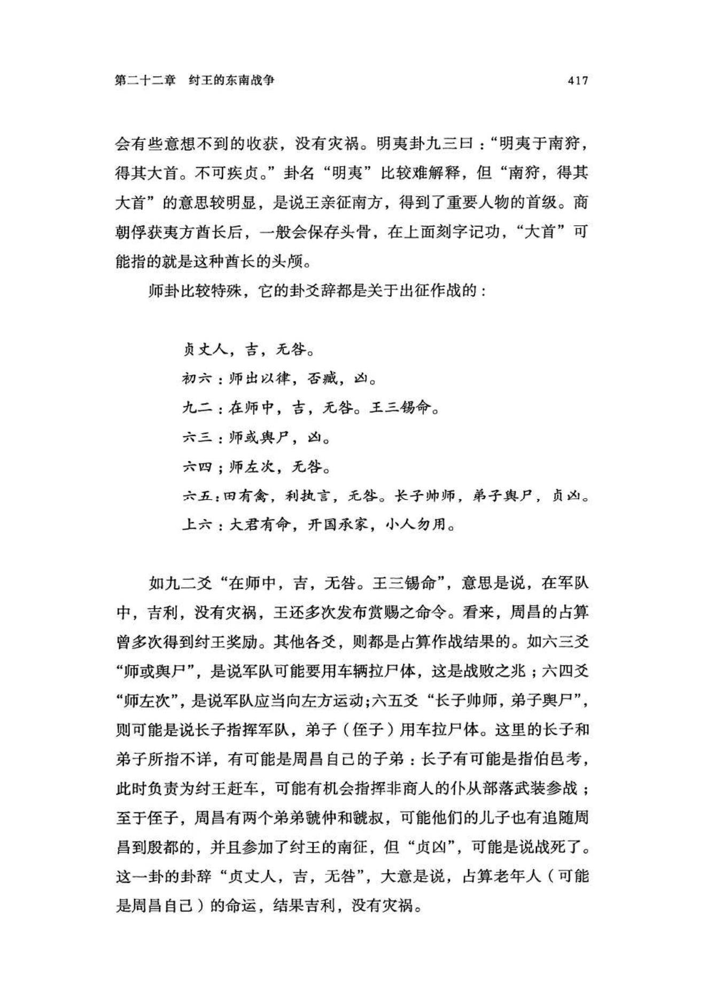
原书阅读器页 432原书物理 PDF 页 430印刷页 418
远征军先是抵达商地和亳地（今河南商丘市一带），然后到达淮河沿岸的攸国。借助商朝首创的文书传送体系，几个东南侯国的君长之前应该已经接到指令，带着兵力集结到了这里，并提前对夷人领地进行过侦察——有个商朝小臣为此制作了纪念战功的青铜卣，铭文云“……才（在）十月……隹子曰令望人方梅”[[editor-fn:2]]（《集成》5417），记述的就是对夷人梅部族的侦察。
人方伯梅率……多侯甾伐人方伯……”甲骨拓片及摹本[[fn:6]]（图）
《集成》5417拓文（图）
《合集》38758 :"人方伯……祖乙伐。”
没有发现有关具体战况的甲骨卜辞，结果应当是大捷，否则事后不会出现记功的铜器。屈原的楚辞《天问》曰：“梅伯受醢，箕子详狂。”这位“梅伯”很可能就是夷方伯梅，“受醢”则是说他被纣王剁成了肉酱（醢）。梅部族生活在淮南，东周时，这里是楚国的疆域，很可能当地人的传说里还保留了一些历史记忆，后被屈原记录了下来。
此外，殷墟还发现过一片人头骨（《合集》38758），上面有刻辞：“人方伯……祖乙伐。” 就是说，这位夷方伯的头骨是在祭祀祖乙（可能是武乙王）时砍下来的。[[fn:7]] 但因这片头骨已被打碎，骨片残缺，难以确定头骨的主人就是梅。也有学者推测，把刻字的头骨打碎可能也是祭祀仪式的一部分。
〔编者注2〕上网下每：梅，梅伯。
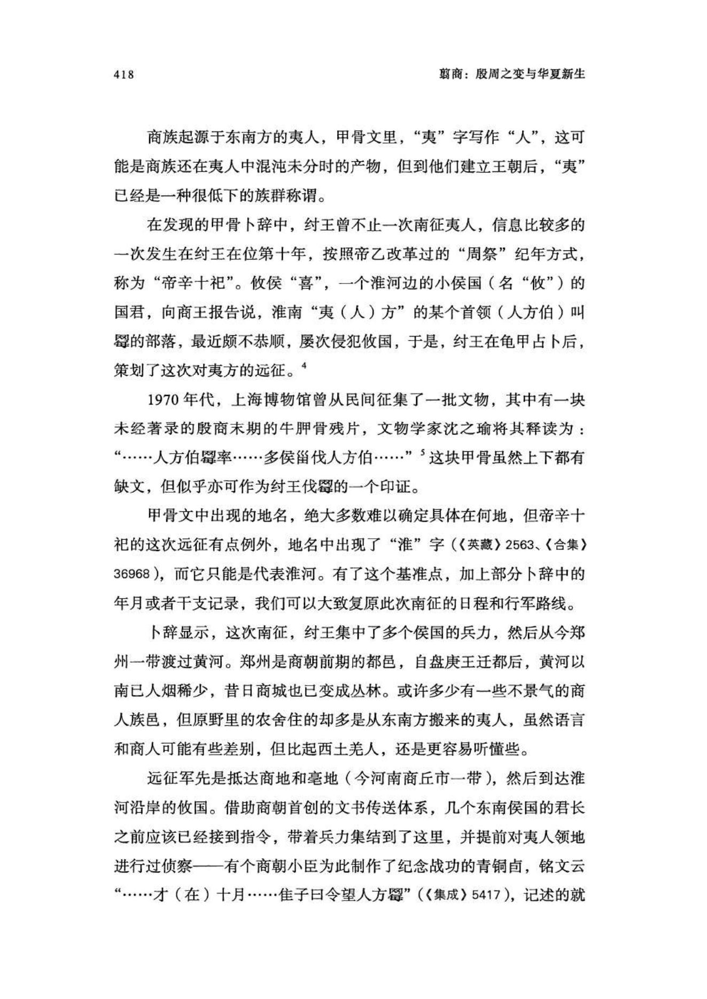
原书阅读器页 433原书物理 PDF 页 431印刷页 419
这次南征，跨越上千里，历时近一年。路上，经常见到野生水牛（兕），纣王一路都在捕猎。卜辞记载，最多的一次猎获了二十多头。
乙巳卜，在口，［贞］王田口，亡灾。［获］见廿又口，来征人方。（《合集》36501）（图）
这次南征俘获的大量土著，自然会被带回殷都充当人牲。此时，商人内部的各族邑也都已经发展壮大，其所捕猎的战俘也会留部分给自己支配。就像刘家庄北M1046墓中的甗女A，应当就是墓主带领宗族武装参加南征的战果，甗女A被带到殷都后，可能先是给主人当了一段贴身奴婢，但主人很快病死了，她的生命也就随之结束，被作为人牲埋进了椁内。
"小臣艅犀尊”铭文拓片，《集成》5990 "作册般甗”铭文拓片，《集成》944（图）
有很多夷人部落分布在从今山东半岛到江苏、豫南、皖北的大片地区，只灭掉一个梅部族显然还不够。卜辞显示，纣王可能还发动过一次南征，但这次保留下来的甲骨很少，远征的目的地不详。流散海外的晚商青铜器“小臣艅犀尊”的铭文（《集成》5990），也记载了这次南征：“王赐小臣艅夔贝，唯王来征人方。唯王十祀又五，肜日。”文王随行南征的，很可能就是这一次。
有些贵族记功的铜器为我们提供了更多信息。“作册般甗”铭文曰：“王宜人方无秋，咸。王赏作册般贝，用作父己尊。来册。”意思是说，一位叫“无敄”的夷人首领成了商朝俘虏，被纣王“宜”和“咸”。“宜”，甲骨文字形像案板上放着切碎的肉，即剁成肉酱；[[fn:8]] “咸”，甲骨文字形像钺和一张嘴，表示剁肉吃。看来，这位“无敄”和“梅伯”的下场一样，被剁成肉酱吃掉了。
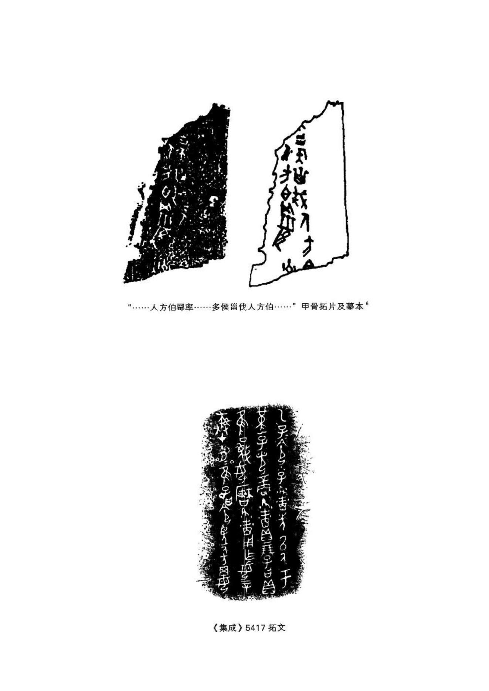
原书阅读器页 434原书物理 PDF 页 432印刷页 420
开拓东南的史族
纣王发动对东南地区的战争，可能也受气候变迁的影响。
自盘庚迁殷以来，殷都已先后经历九位商王，二百余年，一直处在繁荣中，面积也在不停地膨胀。殷墟被考古学者分为四期，每一期的商人墓葬数量都会比之前一期增加一倍左右，这意味着相比盘庚-武丁时期，纣王时期的殷都人口已增长数倍。
但这二百余年间，气候变冷的趋势却越来越明显。商族人传统的家畜是水牛[[fn:9]]，偏爱豢养的野兽是大象，且殷都气候本来就很适合这两种动物。甲骨卜辞有载，武丁王经常在殷都郊外捕猎野象。不过到殷墟晚期，卜辞中有关兕（野生水牛）和大象的记载就很少了，亚热带野生动物正逐渐向黄河以南迁徙，家养的水牛也越来越难以存活。故而，纣王向东南方开疆拓土可能也有把王朝统治重心向南迁移的考虑。
纣王十年和十五年的南征虽然比较成功，但并未立即迁都。可能是黄河以南的欠开发程度让他有所顾虑。倘若迁都，商人需要在草野茂林中重新开辟田园，工作量远远超出当年的盘庚王；而且，现在的殷都居民要比盘庚王时期多很多倍，也比那时更安于舒适的生活。
虽然近期内无法迁都，纣王仍有必要加强对夷人地区的控制，办法仍是派出商人部族建立新的据点和侯国。在这一轮“征服东南”的运动中，殷都东南300多公里外建立了一个商人新据点——滕州前掌大。
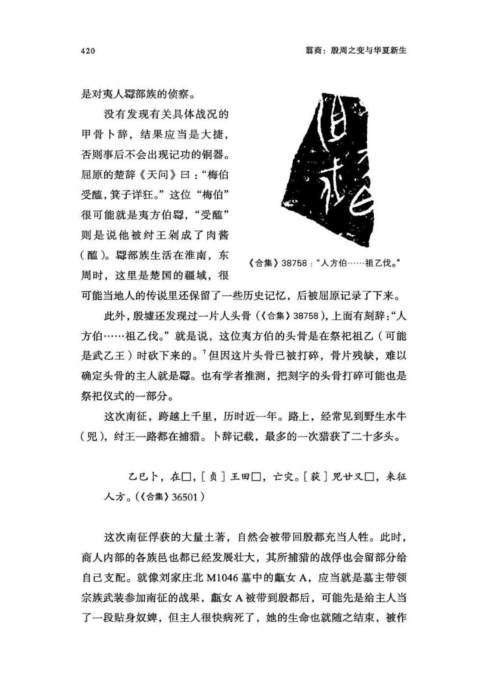
原书阅读器页 435原书物理 PDF 页 433印刷页 421
前掌大遗址出土的很多铜礼器，上面都刻有“史”字族徽。在甲骨文中，“史”是一个非常尊贵的字，写作（甲骨文，形似弋），造型是手拿着一支笔，上面是一张嘴，象征用笔把口头指令记录下来。“史”最初应该是商王的贴身书记官，负责笔录王的命令并下发，后来，当边地发生战事而商王又不能亲自前去指挥时，通常会指派一名大贵族到前线，拥有王的授权，可以用书面命令调集各部族武装，这叫“立史”，即为紧急军务而设立前线指挥部。在甲骨卜辞中，就有“立史于南”和“立史于北”的记载。（《合集》5504、5505）
前掌大史鼎铭文拓片，《集成》1081（图）
这次纣王派往前掌大的是一个实力雄厚、战斗力很强的商人部族，他们的族长有“史”的职权，可以统筹东南夷人地区，也就是整个鲁南、苏北和皖北地区的各商人城邑。他们在前掌大定居下来后，就把“史”作为了自己的族徽。
史氏前掌大遗址，属于淮河流域，位于今山东省南部的滕州市。该遗址目前发现的建筑遗存很少，主要是一百多座墓葬：
一，有两座中字形双墓道大墓和一座单墓道甲字形墓，可称得上方国之君的级别，甚至关中老牛坡的崇国都没有这种排场。
二，殉人并不算多，上述三座大墓分别殉六人、五人和三人，此外，殉二人的有两座，殉一人的有四座。和崇国相比，这里的人殉可谓比较克制。
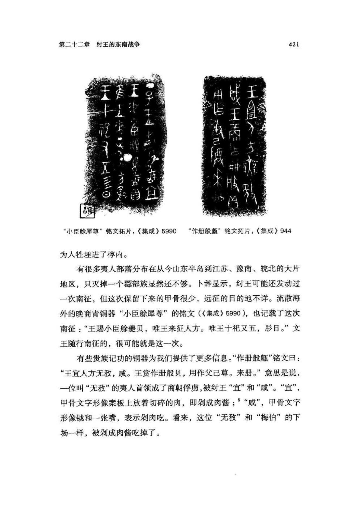
原书阅读器页 436原书物理 PDF 页 434印刷页 422
三，规模较大的墓葬大都已被盗，且破坏严重。有些中小型墓则保存较好，不仅棺椁设施齐备，而且有很多带族徽的青铜礼器。这说明他们有自己的铸造工场，技术高超，铜料来源丰富。
四，有五座车马坑以及四座单独的殉马坑。
五，马坑旁边有十座小墓，发掘报告推测，这些小墓有“殉人的性质”，但没有详细介绍。[[fn:10]] 其中四座随葬45件青铜头盔（胄），保存很好，做工精良，一般在额头部位铸出牛头或虎头等兽面造型，有的还留有皮质的护腮痕迹。随葬最主要的兵器是铜戈、铜矛和铜镞，其中，戈71件，矛25件。
六，和很多商族墓地一样，前掌大的墓主中也有相当比例的女性，且随葬有兵器和酒器，说明她们经常喝酒，也参与战斗：M17的墓主是一名三十岁左右的女性，随葬有铜爵和铜觚，以及铜戈二件；M49的墓主是一名年龄在二十五岁到三十岁间的女性，随葬有铜觚、铜斝和铜爵，以及铜戈二件和玉戈一件，其中一件铜戈长达33厘米多，是这片墓地发现的铜戈中最大的；M108的墓主是一名年龄在三十岁到三十五岁间的女性，随葬有铜爵和铜觚，以及铜戈二件，还有多件较小的作为饰物的玉兵器。
七，M18比较特殊，规模不大，也没有殉人，但除了整套的铜礼器和兵器（包括戈六件）外，还随葬了一辆完整的战车（没有马）。此外，一件铜孟上还刻有铭文：“笨擒人方薛伯顽首戈，用作父乙尊彝，史。”这说明墓主名苯，史氏，平生最大的战果是用戈砍下了夷方薛部族首领“顽”（“人方薛伯顽”）的首级，并制作了这件铜金以祭祀父亲乙。[[fn:11]]
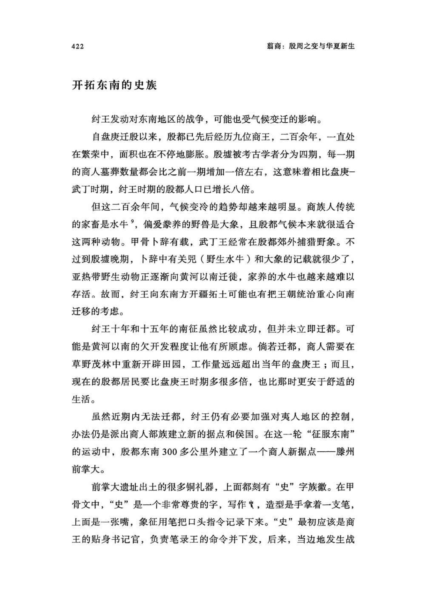
原书阅读器页 437原书物理 PDF 页 435印刷页 423
铜盆上的铭文[[fn:12]]（图）
M18属于史族人的第一批墓地，从这条铭文看，该地之前是夷方薛族的领地（至今前掌大遗址旁边的河流仍叫薛河）。史族占领这里并在此定居后，他们建立的方国仍然叫“薛”，族长则称“薛侯”。
史族在这里立国不久，也许只有十几年的时间，商朝就被周朝灭亡了。但史族人的生活当时并没发生太大变化，又持续了两三代人，然后突然彻底消失，就像他们的到来一样。
徐州北郊的人狗混合祭
对商人来说，淮河流域并不算陌生，这里一直有商文化的零星小聚落。在前掌大遗址南方50公里处，便是江苏铜山丘湾古遗址。[[fn:13]]
丘湾聚落分布在向阳的缓坡地带，面积很小，没有高等级墓葬，只有生活垃圾形成的地层堆积。遗址地面上有很多柱洞，直径只有10厘米左右，说明当时丘湾人住的是小型窝棚。目前只发现了一小块地面建筑遗存，夯土地基厚1.2米，面积仅15平方米，可能是某种公共建筑。丘湾人的主要农具和工具都是石制或骨制的，没有发现青铜礼器和铸铜遗迹，只有一些小刀、凿、镞、鱼钩等小件器物。没有迹象显示这里分化出了显贵和统治者。
仅凭这些，丘湾遗址很难给人留下什么印象，但村落中心偏南的的小广场却发掘出一处残忍的祭祀场：广场的中央位置立着四块狭长的石头，最中间一块长约1米，下部呈楔形插入土中。石头可能代表接受祭祀的神灵，因为在它周围十余米范围内，分布着密集的人和狗的尸骨。
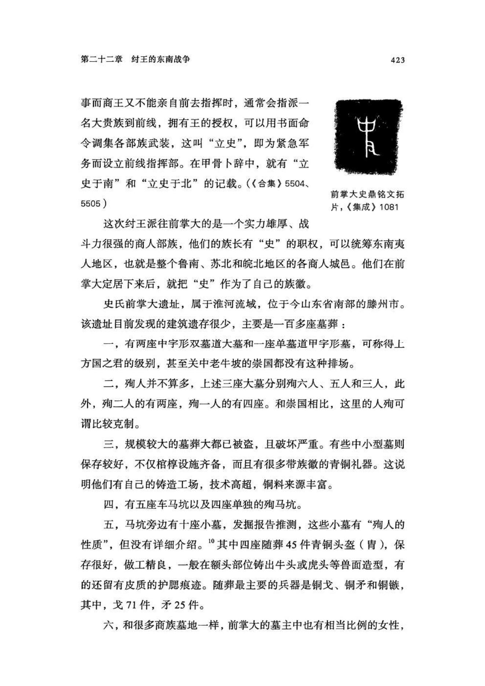
原书阅读器页 438原书物理 PDF 页 436印刷页 424
商代后期，这里举行过两次祭祀：第一次，殉了三人和十只狗，尸体被1米厚的土掩埋了起来；第二次，殉了17人和两只狗，显然，献祭者还记得第一次殉人和殉狗的位置，尽量准确地叠压在了上面。
丘湾遗址位置示意图（图）
部分殉人和狗线图（图）
祭祀场中间立石（较低处是第一次献祭，高处是第二次献祭）（图）
所有尸骨呈俯身跪地姿势，双手大多被反绑在背后，也有个别是双臂摊开、垂下，可能是被处死后绳索断了所致。尸体旁边大都有一小块石头，他们可能是被石块击打头部而死，很多头骨有裂痕和破损。
死者有男有女，有青年，也有壮年。尸骨多数分布在祭台石块的东北方，其次是西南方。献祭者没有挖墓坑，应该是处死人牲后直接堆土掩埋的。在距离石块稍远处，还发现了一具整头牛的骨架，应该也是用来献祭的。
考古学家俞伟超认为，丘湾人祭祀的对象是中央的石块，也就是土地之神，所谓社稷的“社”。这也是商人的传统。甲骨文的“土”字，写作（甲骨文，形似Q），是一块竖立在土地中的石头，象征栖居在石块上的土地之神；有时，上面还会加上代表血液的小点，写作（甲骨文，形似Q 两边各有一个点），意为用血祭祀土地之神。[[fn:14]]
丘湾人的祭祀方式有更早的渊源。早商时代的郑州商城便有用大量人和狗向“神石”献祭的祭祀场，但在殷都尚未发现这种祭祀方式。看来，丘湾人是早商时代从郑州商城分化出来的一支，有可能是九世之乱时期从郑州迁徙到丘湾地区的。
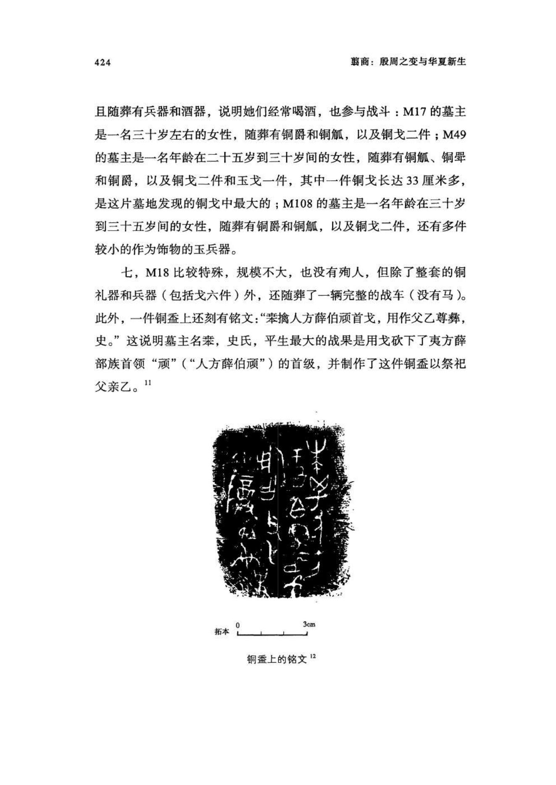
原书阅读器页 439原书物理 PDF 页 437印刷页 425
丘湾遗址的陶器形制和安阳殷墟非常接近，基本涵盖从殷墟早期到晚期的二百多年，可见，丘湾人虽然不富庶，但不算闭塞，即便在盘庚迁都黄河北之后，也还一直和殷都保持着联系。
商人跟西土的羌及周族群泾渭分明，但和东夷族群的关系，以及殷都对东夷地区的控制情况，依然还有很多未知的领域。从甲骨卜辞可见，纣王很关注东夷地区，也投入了很多资源，可能是试图在商族孕育之地实现王朝的再度更新；但与此同时，颠覆商朝的创意也正在殷商内部萌生。
注释
1中国社科院考古所安阳工作队：《安阳殷墟刘家庄北1046号墓》，《考古学集刊》第15辑。
2殷墟发掘的铜羸蒸人头不只这两处，有些因为没有发表报告而不为外界所知：“在青铜巅中发现人头骨的现象，目前可能发现了三到四例。”参见何毓灵《殷墟：揭开商代贵族墓的秘密》，《新京报•书评周刊》2021年12月31日。
3考古学者唐际根“一席”专栏演讲：《洛阳铲下的商王朝》。
4《合集》36482；罗琨：《商代战争与军制》，中国社会科学出版社，2010年，第310—327页。
5沈之瑜：《介绍一片伐人方的卜辞》，《考古》1974年第4期。
6同上。
7胡厚宣：《中国奴隶社会的人殉和人祭》（下篇），《文物》1974年第8期。
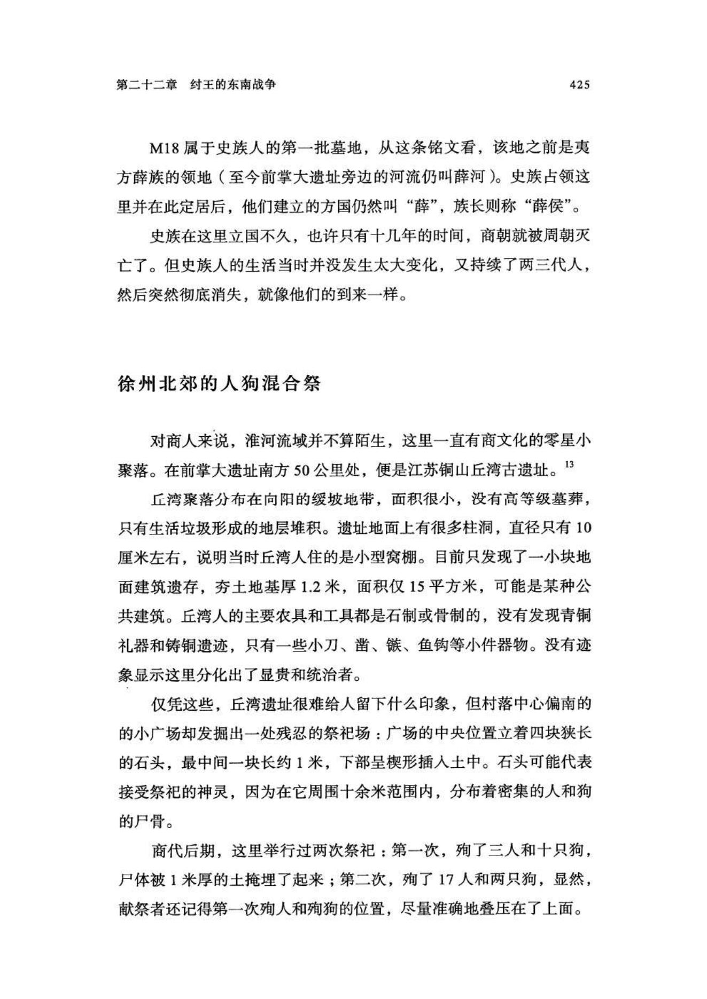
原书阅读器页 440原书物理 PDF 页 438印刷页 426
8刘桓：《无敌鼎、般鼾与晚殷征人方之役》，《甲骨集史》，中华书局，2008年，
第95页。
9 1948年，学者曾对当时安阳殷墟出土的动物骨骼进行鉴定，其中水牛骨数量极多，在千头以上。参见杨钟健、刘东生《安阳殷墟之哺乳动物群补遗》，《中国考古学报》第4册，1949年。
10中国社科院考古所：《滕州前掌大墓地》，文物出版社，2005年。有关该遗址的基本信息及图片，未注明出处的，皆出自该书，不再详注。
11这里的“薛伯”，学界一般释读成“潍伯”。但本书认为，根据拓本字形，应是水字旁加“薛”字。关于此铭文已有的释读成果，参见冯时《前掌大墓地出土铜器铭文汇释》，载《滕州前掌大墓地》（上册）。
12中国社科院考古所：《滕州前掌大墓地》，图218。
13南京博物院：《江苏铜山丘湾古遗址的发掘》，《考古》1973年第2期。有关该遗址的基本信息及图片，未注明出处的，皆出自该文，不再详注。
14俞伟超：《铜山丘湾商代社祀遗迹的推定》，《考古》1973年第5期。
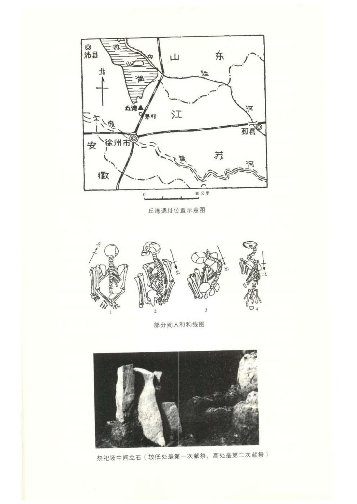
原书阅读器页 441原书物理 PDF 页 439印刷页 427
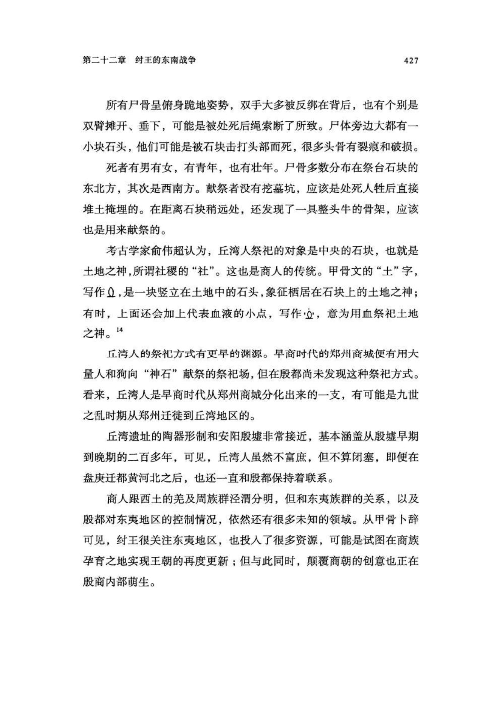
原书阅读器页 442原书物理 PDF 页 440印刷页 428
[[editor-fn:1]]
〔编者注1〕更新生僻字
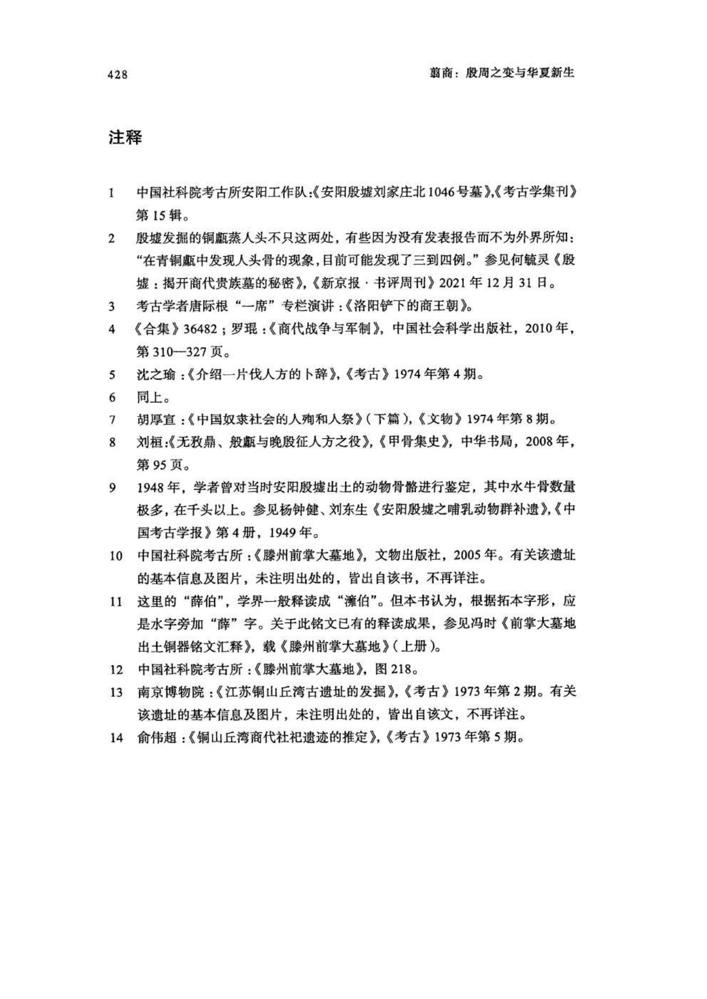
编辑札记
标记
先在正文中选择文字，再输入拼音；可用“拼音；简注”。